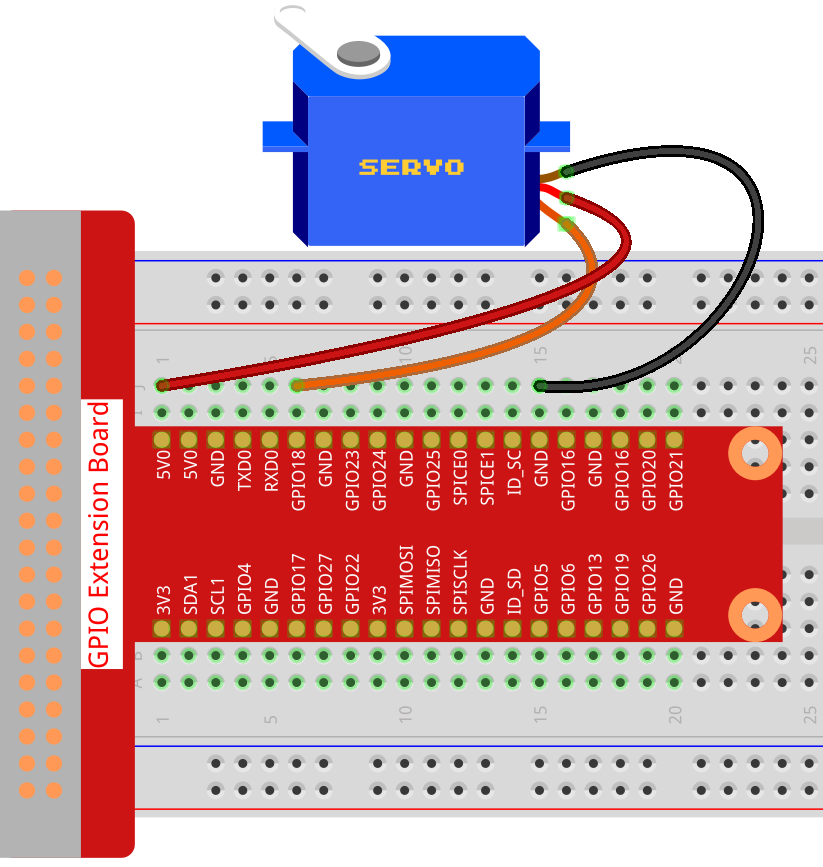

注釈
こんにちは、SunFounderのRaspberry Pi & Arduino & ESP32愛好家コミュニティへようこそ！Facebook上でRaspberry Pi、Arduino、ESP32についてもっと深く掘り下げ、他の愛好家と交流しましょう。
参加する理由は？
エキスパートサポート：コミュニティやチームの助けを借りて、販売後の問題や技術的な課題を解決します。
学び＆共有：ヒントやチュートリアルを交換してスキルを向上させましょう。
独占的なプレビュー：新製品の発表や先行プレビューに早期アクセスしましょう。
特別割引：最新製品の独占割引をお楽しみください。
祭りのプロモーションとギフト：ギフトや祝日のプロモーションに参加しましょう。
👉 私たちと一緒に探索し、創造する準備はできていますか？[ここ]をクリックして今すぐ参加しましょう！
1.3.2 サーボ
前書き
このレッスンでは、サーボを回転させる方法を学ぶ。
部品

原理
サーボ
サーボは一般に、ケース、シャフト、ギアシステム、ポテンショメーター、DCモーター、および内蔵式ボードで構成されている。

これは次のように動作する：マイクロコントローラーはPWM信号をサーボに送信し、サーボの内蔵式ボードは信号ピンを介して信号を受信し、内部のモーターを制御して回転させる。その結果、モーターはギアシステムを駆動し、減速後にシャフトを駆動する。サーボのシャフトとポテンショメーターは接続されている。シャフトが回転する時、ポテンショメーターが駆動されるため、ポテンショメーターは電圧信号を内蔵式ボードに出力する。 その後、ボードは現在の位置に基づいて回転の方向と速度を決めるため、定義された位置で正確に停止してそのまま保持する。

角度は制御ワイヤに適用されるパルスの持続時間によって決まる。これはパルス幅変調と呼ばれる。 サーボは20ミリ秒ごとに1パルスを期待している。パルスの長さにより、モーターの回転距離が決まる。 たとえば、1.5msパルスは、モーターを90度の位置（ニュートラル位置）に回転させる。
1.5 ms未満のパルスがサーボに送信されると、サーボはある位置まで回転し、出力軸をニュートラル位置から反時計回りにある程度保持する。 パルスが1.5ミリ秒を上回る場合、逆のことが起こる。 有効な位置にサーボを回転させるように命令するパルスの最小幅と最大幅は、各サーボの機能である。 通常、パルスの最小幅は約0.5 msで、最大幅は2.5 msである。

回路図

実験手順
ステップ1： 回路を作る。
{kind=link}
C言語ユーザー向け
ステップ2： コードのフォルダーに入る。
cd ~/davinci-kit-for-raspberry-pi/c/1.3.2
ステップ3： コードをコンパイルする。
gcc 1.3.2_Servo.c -lwiringPi
ステップ4： EXEファイルを実行する。
sudo ./a.out
プログラムが実行されると、サーボは0度から180度まで回転し、それから180度から0度まで循環的に回転する。
コード
#include <wiringPi.h>
#include <softPwm.h>
#include <stdio.h>
#define ServoPin 1 //define the servo to GPIO1
long Map(long value,long fromLow,long fromHigh,long toLow,long toHigh){
return (toHigh-toLow)*(value-fromLow) / (fromHigh-fromLow) + toLow;
}
void setAngle(int pin, int angle){ //Create a funtion to control the angle of the servo.
if(angle < 0)
angle = 0;
if(angle > 180)
angle = 180;
softPwmWrite(pin,Map(angle, 0, 180, 5, 25));
}
int main(void)
{
int i;
if(wiringPiSetup() == -1){ //when initialize wiring failed,print message to screen
printf("setup wiringPi failed !");
return 1;
}
softPwmCreate(ServoPin, 0, 200); //initialize PMW pin of servo
while(1){
for(i=0;i<181;i++){ // Let servo rotate from 0 to 180. setAngle(ServoPin,i);
delay(2);
}
delay(1000);
for(i=181;i>-1;i--){ // Let servo rotate from 180 to 0. setAngle(ServoPin,i);
delay(2);
}
delay(1000);
}
return 0;
}
コードの説明
long Map(long value,long fromLow,long fromHigh,long toLow,long toHigh){
return (toHigh-toLow)*(value-fromLow) / (fromHigh-fromLow) + toLow;
}
次のコードで値をマップする Map() 関数を作成する。
void setAngle(int pin, int angle){ //Create a funtion to control the angle of the servo.
if(angle < 0)
angle = 0;
if(angle > 180)
angle = 180;
softPwmWrite(pin,Map(angle, 0, 180, 5, 25));
}
角度をサーボに書き込むために、関数 setAngle() を作成する。
softPwmWrite(pin,Map(angle,0,180,5,25));
この関数はPWMのデューティサイクルを変更できる。
サーボを0〜180°に回転させるために、周期が20msのときにパルス幅を0.5ms〜2.5msの範囲内で変更してください。
関数 softPwmCreate() では、周期が200x100us = 20msに設定されているため、0〜180を5x100us〜25x100usにマッピングする必要がある。
この関数のプロトタイプを以下に示す。
int softPwmCreate（int pin，int initialValue，int pwmRange）;
pin: Raspberry PiのGPIOピンはPWMピンとして設定できる。
initialValue: 初期パルス幅は、initialValueに100usを掛けたものである。
pwmRange: PWMの周期は、pwmRangeに100usを掛けたものである。
Python言語ユーザー向け
ステップ2： コードのフォルダーに入る。
cd ~/davinci-kit-for-raspberry-pi/python/
ステップ3： EXEファイルを実行する。
sudo python3 1.3.2_Servo.py
プログラムが実行されると、サーボは0度から180度まで回転し、それから180度から0度まで循環的に回転する。
コード
注釈
以下のコードを 変更/リセット/コピー/実行/停止 できます。 ただし、その前に、 davinci-kit-for-raspberry-pi/python のようなソースコードパスに移動する必要があります。
import RPi.GPIO as GPIO
import time
SERVO_MIN_PULSE = 500
SERVO_MAX_PULSE = 2500
ServoPin = 18
def map(value, inMin, inMax, outMin, outMax):
return (outMax - outMin) * (value - inMin) / (inMax - inMin) + outMin
def setup():
global p
GPIO.setmode(GPIO.BCM) # Numbers GPIOs by BCM
GPIO.setup(ServoPin, GPIO.OUT) # Set ServoPin's mode is output
GPIO.output(ServoPin, GPIO.LOW) # Set ServoPin to low
p = GPIO.PWM(ServoPin, 50) # set Frequecy to 50Hz
p.start(0) # Duty Cycle = 0
def setAngle(angle): # make the servo rotate to specific angle (0-180 degrees)
angle = max(0, min(180, angle))
pulse_width = map(angle, 0, 180, SERVO_MIN_PULSE, SERVO_MAX_PULSE)
pwm = map(pulse_width, 0, 20000, 0, 100)
p.ChangeDutyCycle(pwm)#map the angle to duty cycle and output it
def loop():
while True:
for i in range(0, 181, 5): #make servo rotate from 0 to 180 deg
setAngle(i) # Write to servo
time.sleep(0.002)
time.sleep(1)
for i in range(180, -1, -5): #make servo rotate from 180 to 0 deg
setAngle(i)
time.sleep(0.001)
time.sleep(1)
def destroy():
p.stop()
GPIO.cleanup()
if __name__ == '__main__': #Program start from here
setup()
try:
loop()
except KeyboardInterrupt: # When 'Ctrl+C' is pressed, the program destroy() will be executed.
destroy()
コードの説明
p = GPIO.PWM(ServoPin, 50) # set Frequecy to 50Hz
p.start(0) # Duty Cycle = 0
servoPin をPWMピンに設定し、次に周波数を50hzに、周期を20msに設定する。
p.start(0) : PWM関数を実行し、初期値を0に設定する。
def setAngle(angle): # make the servo rotate to specific angle (0-180 degrees)
angle = max(0, min(180, angle))
pulse_width = map(angle, 0, 180, SERVO_MIN_PULSE, SERVO_MAX_PULSE)
pwm = map(pulse_width, 0, 20000, 0, 100)
p.ChangeDutyCycle(pwm)#map the angle to duty cycle and output it
関数 setAngle() を作成して、0〜180の範囲の角度をサーボに書き込む。
angle = max(0, min(180, angle))
このコードは角度を0〜180°の範囲に制限するために使用される。
min() 関数は入力値の最小値を返す。角度が180以下の場合、180を返す。そうではない場合、角度を返す。
max() メソッドは、反復可能または最大の2つ以上のパラメーターで最大要素を返す。角度が0以上の場合は0を返し、そうでない場合は角度を返す。
pulse_width = map(angle, 0, 180, SERVO_MIN_PULSE, SERVO_MAX_PULSE)
pwm = map(pulse_width, 0, 20000, 0, 100)
p.ChangeDutyCycle(pwm)
0〜180°の範囲をサーボにレンダリングすると、サーボのパルス幅は0.5ms（500us）〜2.5ms（2500us）に設定される。
PWMの周期は20ms（20000us）であるため、PWMのデューティサイクルは（500/20000）％-（2500/20000）％であり、0〜180の範囲は2.5〜12.5にマッピングされる。
現象画像